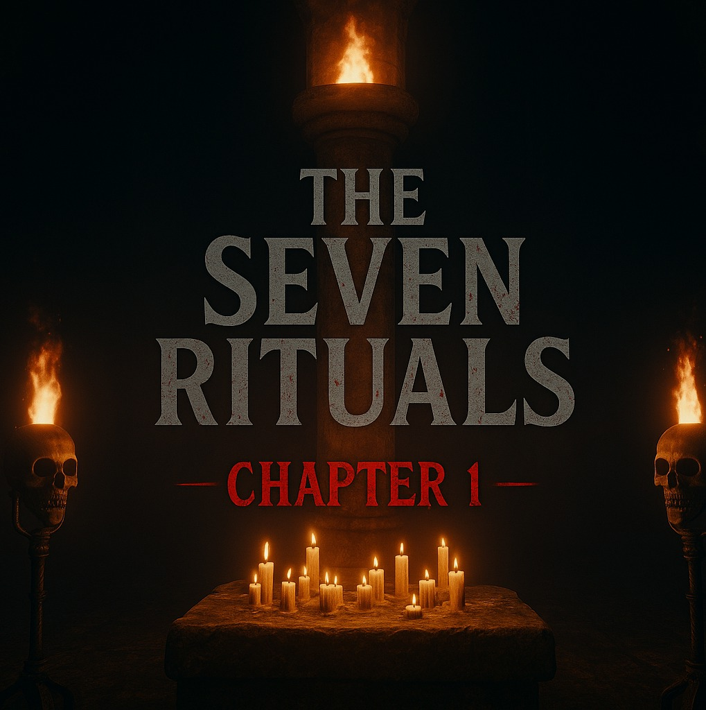
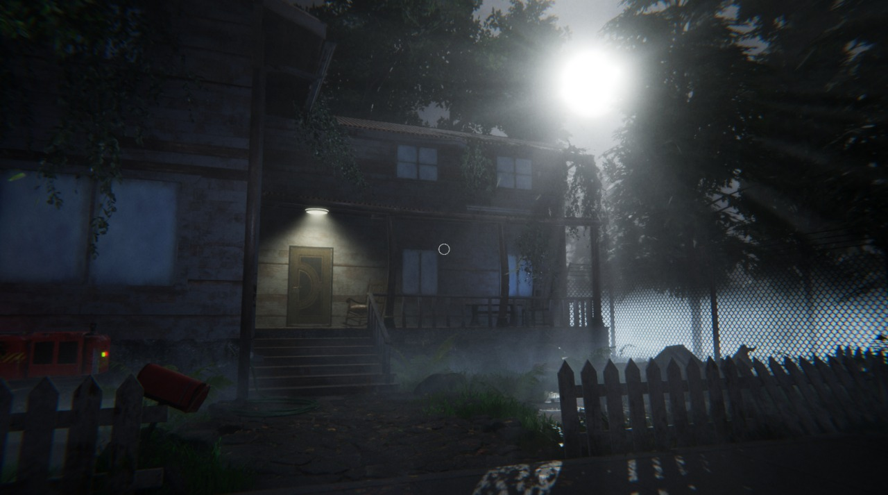
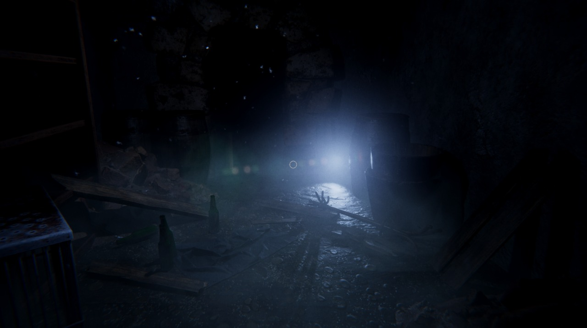
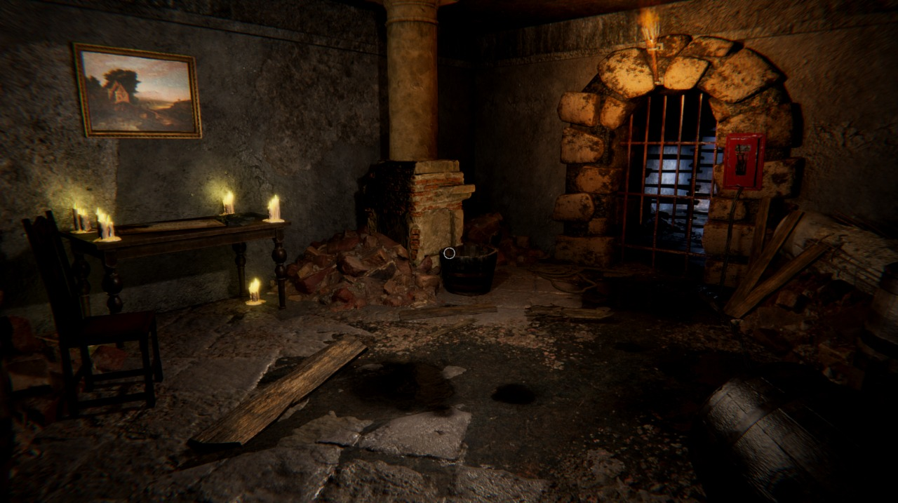
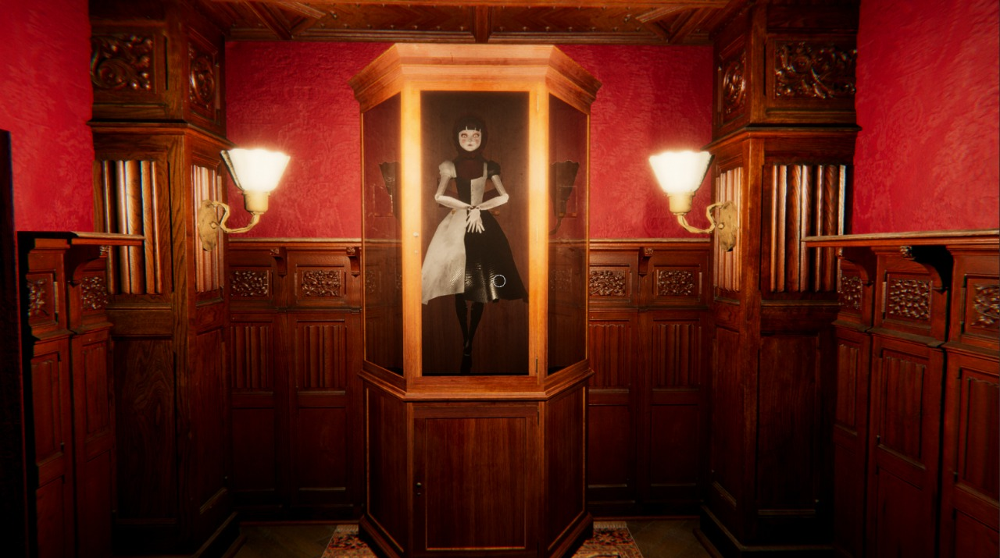

The Seven Rituals - Chapter 1
Género: Survival Horror
Jugadores: 1
Textos: Español, Ingles, Portugues, Frances, Aleman, Japones, Ruso, Italiano
Voces: no disponible
Plataforma:Windows
Desarrollador: Grizzi Studio
Investiga una casa abandonada en lo profundo de un bosque solitario,
donde extraños rituales, criaturas y sangre revelan un oscuro secreto.
¿Podrás descubrir al responsable de las desapariciones… o serás la próxima víctima?.




Requisitos
Sistema Operativo: Windows 10/11
Memoria Ram: 8 GB RAM
Almacenamiento: 10GB de almacenamiento
Procesador: Intel Core I3 9100
Tarjeta Grafica: Nvidia Geforce GTX 1660 6GB Vram
Directx: versión 12